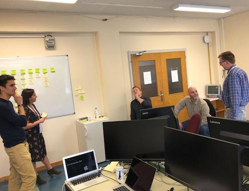
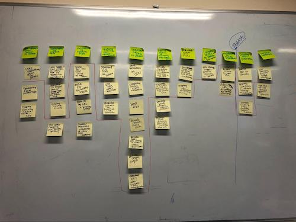

Dryad & Zenodo: Our Path Ahead
by
 Alex Ioannidis,
on March 10, 2020
Alex Ioannidis,
on March 10, 2020
In July, 2019 we were proud to announce a funded partnership between Dryad and Zenodo. Today, we are excited to give an update on our future together.
Dryad and Zenodo have both been leading the way in open-source data, software, and other research outputs publishing for the last decade. While our focus and adoption mechanisms may have been different, we’ve had similar values and goals all along: publish and archive non-traditional research outputs in an open and accessible way that promotes best practices.
In looking to expand our capacities for sharing data and software, it became clear that we could each benefit from the other’s expertise. Dryad has long focused on research data, curating each dataset published, and working in close coordination with publishers and societies to support journal data policies. Zenodo, based at CERN, builds on strong infrastructure capacity and has focused on software publishing and citation. It was clear that by working together, leveraging each other's expertise, we could better achieve our goals. Notably, we believe researchers should have an opportunity to publish curated data, software, and other research outputs at a trusted, open source set of repositories in a seamless way.
At the beginning of February, we brought our two teams together to understand the repository systems, roadmaps, and to map our work ahead. We have broken down this work into a couple of segments and will be beginning with our first project, as noted on our Github, as “DJ D-Zed: Mixing Up Repositories”. In other words, we will be integrating our two systems to lower the barrier for researchers who want to follow best practices publishing their software, data, and supporting information. The first direction of focus is publishing from Dryad to Zenodo.

So, what does it all look like?
This project entails re-imagining the Dryad upload interface to expand the scope of upload to accommodate researchers uploading more than data. Within this interface, through a series of declarations and machine reading, we will triage data, software, and supporting (other) files. Data should be curated and published at Dryad. Software requires a series of different license options, metadata, and other attributes and supporting files benefit from a previewer, so these files are more appropriately published at Zenodo.
After curation, once the items are ready to be published, it is essential that we can link up the work with their DOIs and citations to both. As Dryad and Zenodo each mint DOIs for published works, it is our responsibility to expose the relationship between the software, data, and other citations so users can find all related work. The benefit of having separate citations for software and data will allow for more specified citation practices at journals, in preprints, etc.

It is essential that we acknowledge the importance of user testing. We have identified our minimum viable product, but the look and feel of this relies on close collaboration with our user experience teams and researcher user testing. This integration can only succeed if researchers find the benefits of using one entry point for two repositories, and are educated along the way about best practices for data and software. We’ll be planning opportunities for feedback at specific milestones, and appreciate comments via email or github comments along the way.
What happens next
Our partnership relies on cross-organization co-development. Our teams have been spending time to understand how Dryad and Zenodo both function to ensure we are building for success for each of our user communities. Our initial user testing is about to ramp up, and we have begun the exploration into backend development to tie our systems closer together. As avid open-source supporters, all of our work will be tracked publicly on Github. Our code and documentation will also be available as new features are released.
User testing our workflows with researchers will help guide our development, but we also need to understand how this work can support Dryad and Zenodo’s larger communities: institutions, libraries, publishers, societies, funding agencies, and others that have a stake in research data and software publishing. We will have regular opportunities for feedback and we hope you will weigh in.
Check out our blogs for updates as well as our Twitter to hear about upcoming meetings we will be presenting at. And If you have feedback please as always get in touch with our Product Managers at Dryad and Zenodo.